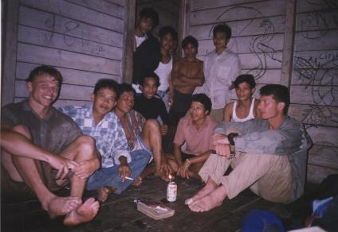
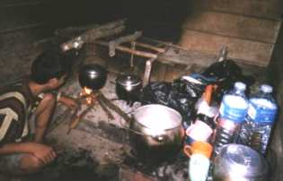
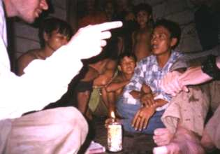
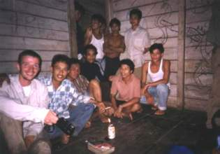

De afgelopen nacht had het nauwelijks geregend en het beloofde een mooie dag te worden. Toen ik opstond (5:15 uur) hoorde ik Steven al enthousiast roepen dat de rivier zo'n 2,5 meter gezakt was. Ik ging kijken en ik zag het vlot nu bijna verticaal hangen, tegen de steile oever van de rivier aan. Het dikke touw waarmee het vlot bevestigd was aan een boom stond nu behoorlijk onder spanning, want het vlot woog zo'n 80 à 90 kg. Gisteravond dreef het vlot vanwege het hoge water nog gewoon op de rivier.
We braken de tent af; dit was zo gepiept. Als we naar de rivier keken, dan was het duidelijk dat de waterkolken veel minder hevig waren dan gisteren. De angst om weer een paar meter onder water gezogen te worden, was nu dus ook veel minder. Het plan was dus om uit de kom te komen door ons eerst een stukje stroomafwaarts te laten meevoeren. Als we aan de kant van de kom zouden komen waar de 'normale' stroming vlakbij was, dan zouden we daar keihard naar toe gaan zwemmen. Voordat we vertrokken bonden we nog een heel dik stuk bamboe onder ons vlot. Deze verdwaalde bamboe-stam hadden we gisteren in de rivier gevonden. Bamboe heeft een enorm drijfvermogen, omdat er allemaal holle kamers in zitten. Onze bamboe was echter al in een verregaande staat van ontbinden, zodat de meeste luchtkamers lek waren. Toch gaf het ons duidelijk meer drijfvermogen. Vóórdat we in de jungle waren fantaseerden we over een vlot van bamboe. Hoger in de bergen (waar we het vlot gebouwd hadden) komt echter helemaal geen bamboe voor; het blijkt alleen in lagere gebieden voor te komen.
Voordat we werkelijk vertrokken aten we onze laatste pak crackers op en een klein zakje doppinda's. Dit was het allerlaatste voedsel dat 'direct eetbaar' was (op ons noodrantsoen na). Met veel kracht lieten Steven en Richard het vlot te water. Vervolgens bond ik met erg zere handen de tassen weer zo strak mogelijk vast op het vlot. Mijn handen waren op veel plekken open, ze waren dik en er zat veel vuil in. Bovendien sneed het dunne touw enorm in mijn handen. De malariapillen die we eigenlijk gisteren al hadden moeten innemen, hadden we niet paraat. Toen we eenmaal in de kom dreven, was iedereen super-geconcentreerd: het moet gewoon lukken! Het was rond 8:00 uur. Ik had een hele lange stok vast die ik slechts één keer zou gebruiken: zo hard mogelijk afzetten op het moment dat we van de oever vandaan gaan. Daarna zou de rivier veel te diep zijn voor een afzetstok. Toen we er bijna waren, telden we met zijn drieën af, zodat we alledrie op het zelfde moment al onze kracht konden geven. Ik zette af en daarna zwommen we zo hard als we konden richting de andere kant van de rivier. Aan het einde van een kom bevindt zich altijd een soort splitsing. Vaar je nog net op het randje van de kom, dan maak je een bocht en vaar je weer terug (jammer jôh). Vaar je iets meer in de richting van de overkant van de rivier, dan word je meegenomen door de 'normale' stroming en ben je ontsnapt! Gelukkig was het laatste bij ons van toepassing, alhoewel we tot op het laatste moment ons helemaal hebben moeten geven.
We hadden weer een behoorlijk overwinningsgevoel en bovendien kwam de zon ook steeds vaker door de wolken een kijkje nemen... Zodra we heel in de verte een inham of kom zagen, dan begonnen we uit voorzorg meteen fanatiek te zwemmen. Alleen op deze wijze is het mogelijk uit de meeste kommen te blijven. Door het lagere water, was alles wat minder wild dan gisteren en voeren we ook iets minder snel. Dit geldt echter niet voor de hele rit: we kwamen één keer in een stroomversnelling bij een bocht van de rivier. Het vlot schuurde verticaal tegen de rotswand aan en sloeg bijna over de kop. De Efteling is hier echt niets bij! Ook kwamen we een keer in een heel ondiepe stroomversnelling waar de rotsen maar zo'n 30 cm onder het water zaten. "Benen binnenboord!!" riepen we dan. Het vlot schudde bijna uit elkaar! Later bleek dit ook te zijn gebeurd. Op een gegeven moment zagen we een keurig afgezaagd stammetje vlak naast ons vlot drijven. "He, kijk daar", zei een van ons, "dit stammetje kunnen we nog wel gebruiken!". Een stammetje van precies de goede dikte en lengte vlak naast ons vlot... Dat kon maar een ding betekenen: het stammetje was van ons vlot losgeraakt en was onderdeel van de basis!
Iets voor 12:00 uur begon Richard met het repareren van de boeg van het vlot. De boeg had zo'n dreun gehad, dat het touw waarmee de uiteinden aan elkaar zaten, gebroken was. Ik bond de tassen weer op het vlot. We hadden genoeg betadine, alcoholdoekjes, gaasjes, pleisters en verbandjes mee om al onze wondjes (mijn handen!) heel veel keren te verzorgen, maar het was te chaotisch. We hadden simpelweg geen tijd om ze te verzorgen. Veel medische spullen waren bovendien nat geworden in Steven's tas. Rond 12:15 uur vertrokken we voor de tweede rit van de dag. De zon werd steeds scherper en het varen ging uitstekend. Toch hadden we het nog wel koud, vooral Richard. Alhoewel Ries weinig probeerde te laten merken, zag zijn gezicht er koud en ongeveer 2 keer zo klein uit. We werden wat luier met het preventief zwemmen om de inhammen te ontwijken. Als we een kom aan zagen komen, dan wachtten we de situatie steeds vaker af. Als de zon je overhemd bijna gedroogd heeft en het water is koud, dan is het namelijk een drempel om weer fanatiek te gaan zwemmen in het koude water. Zodoende kwamen we nog enkele keren in een inham waar we weer vrij gemakkelijk uit kwamen. Ik dacht een keer een blauw zeil te zien en dacht dat daar een soort tent stond. Enthousiast wees ik naar de plek: het bleek gewoon een stukje blauwe lucht tussen de bomen te zijn. Iets verder kwamen we langs een houten huisje; dit was het laatste huisje dat we zagen op de heenweg.
We overlegden of we naar het eerste dorpje door zouden varen of dat we zo snel mogelijk kamp op zouden zetten. Doorvaren ging gepaard met een risico: als zou blijken dat we niet voor het donker in Sadap (het eerste dorpje) zijn, dan zouden we in het donker moeten aanmeren, de tent opzetten en al onze andere zaakjes regelen. Dat is niet te doen en bovendien zeer gevaarlijk!! Toen we een inham zagen met heel veel drijvend bamboe, was de beslissing snel genomen. We zouden hier ons kamp opzetten en morgen het vlot verbeteren met bamboe, zodat we aan zouden komen met een vlot die tenminste drijft! Bovendien konden we hier de tent opzetten met bamboe, dit materiaal is hiervoor uitermate geschikt. We verdeelden de taken. Ik ging bamboe zagen, Richard zou de zijtakken van de gezaagde bamboestammen afhakken en Steven zou het bamboe naar ons kamp brengen dat zo'n 25 meter verder was. Opeens begon het te onweren en te regenen.
Vlak nadat het begon te regenen, kwam er een klein houten bootje met een Indonesiër. Hij vroeg dingen, maar hij hing ook een eigen verhaal op. Uit zijn verhaal konden we opmaken dat hij van ons avontuur op de hoogte was (hij had het meerdere keren over 'tiga orang Belanda' (drie Nederlanders) en 'rimba' (jungle) ). Eerst besteedden we weinig aandacht aan deze man. Hij kwam aan wal en hield zijn verhaal nog een keer. Hij gebaarde naar zijn bootje. Wij mochten met hem mee. Alhoewel ik in eerste instantie echt niet mee wilde, kregen we alledrie toch steeds meer gemengde gevoelens. Het onweerde en het ging steeds harder regenen. Na 8 dagen in de jungle te hebben geleefd was het grootste deel van onze bepakking nat. We hadden overal wondjes en mijn handen deden enorm veel pijn. Om voor het donker klaar te zijn met alles, zouden we nog behoorlijk hard moeten doorwerken. Door mee te gaan, konden we misschien ook nog een leuk avontuurtje beleven! We spraken af dat Kil (zo heette hij) ons naar Sadap zou brengen, het eerste dorpje langs de rivier.
Omdat we het vlot achter moesten laten, demonteerden we deze zo snel mogelijk. Het touw hadden we immers nodig voor een eventuele volgende jungle-trip. Kil bleek een heel behulpzame man. Hij had kleine voeten die bij de tenen heel breed werden en hij zag er sterk en gezond uit. Hij hielp fanatiek mee met het losknopen van het touw. Ik gaf Ries mijn zakmes, zodat hij de strakke knopen door kon snijden om tijd te winnen. Opeens liet Ries het zakmes per ongeluk in het water vallen; we stonden immers in het water te werken. De rivierbodem liep zó steil naar beneden, dat ik mijn zakmes meteen al had afgeschreven. Toch probeerde Ries hem op te duiken, tot 3 keer aan toe. Tevergeefs... Kil vroeg wat er aan de hand was en Ries zei 'parang kecil di sungai!' (klein kapmes in de rivier). Ik voegde er nog 'parang merah' aan toe (rood kapmes). Hij begreep het en verdween onder het water. Na circa 35 seconden kwam hij 5 meter verderop weer boven water en hij hield met een glimlach mijn zakmes in de lucht! De tovenaar!
|  |
We komen net uit de jungle. Hier in 'rumah teman' werden we hartelijk ontvangen en konden we lekker rijst met vis eten. |
We stapten in de stromende regen in het kleine houten bootje van Kil op weg naar Sadap. Eén persoon moest constant water uit het bootje scheppen. De rand van het bootje stak maar enkele centimeters boven het water uit. Verrassend genoeg was Sadap slechts ongeveer 1 km verderop. Kil begeleidde ons naar een klein huisje waarin veel mensen zaten. Er was geen wc en de keuken was een hokje waar een vuurtje brandde. We dachten dat het Kil's huis was, maar later bleek het een 'rumah teman' (huis voor vrienden) te zijn. We kregen rijst met 'iekan asin' (erg zoute vis). De visjes waren gezout en in de zon gedroogd waardoor ze lang bewaard kunnen worden. Om te eten, hoefde je ze alleen even te bakken, maar ze bleven hard. Ook kregen we elk een paar hele pepertjes. Ondanks de eenvoud van het eten, genoten we er enorm van en we konden ons helemaal vol eten. De gastheer vroeg steeds of we meer wilden en we aten elk wel drie borden vol (exclusief het bord). We probeerden een gesprek aan te knopen.
|  |
In deze keuken werd ons heerlijke eten bereid. |
|  |
Een gesprek aanknopen... |
|  |
Sommige van deze mensen gaan morgen zelf voor twee maanden de jungle in. |